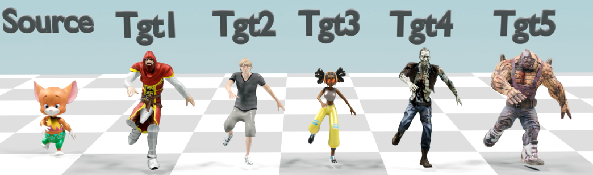
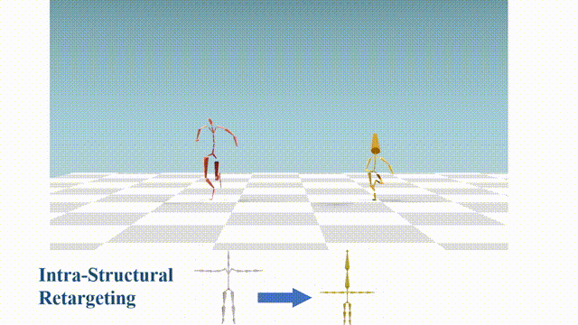
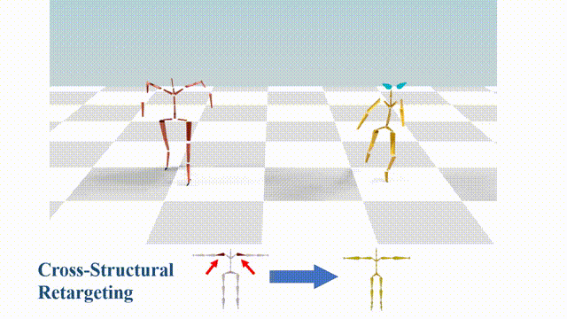
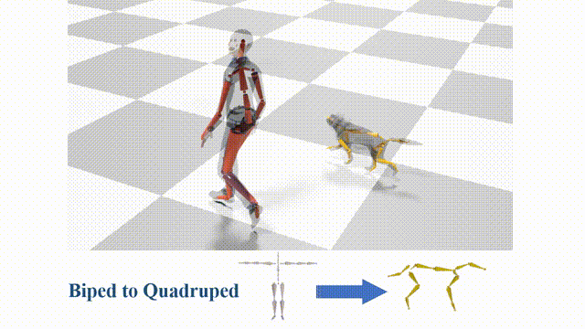
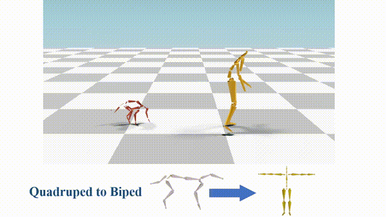

Pose-aware Attention Network for Flexible Motion Retargeting by Body Part
Transactions on Visualization and Computer Graphics (TVCG 2023)
Lei Hu† (1,2) Zihao Zhang†
(1) Chongyang Zhong
(1,2)
Boyuan Jiang
(1,2) Shihong Xia* (1,2)
(1) Institute of Computing Technology, Chinese Academy of Sciences
(2) University of Chinese Academy of Sciences
† indicates equal contributions and * represents the corresponding author

|
Abstract
Motion retargeting is a fundamental problem in computer graphics and computer vision. Existing approaches usually have
many strict requirements, such as the source-target skeletons needing to have the same number of joints or share the same topology.
To tackle this problem, we note that skeletons with different structure may have some common body parts despite the differences in
joint numbers. Following this observation, we propose a novel, flexible motion retargeting framework. The key idea of our method is to
regard the body part as the basic retargeting unit rather than directly retargeting the whole body motion. To enhance the spatial
modeling capability of the motion encoder, we introduce a pose-aware attention network (PAN) in the motion encoding phase. The PAN
is pose-aware since it can dynamically predict the joint weights within each body part based on the input pose, and then construct a
shared latent space for each body part by feature pooling. Extensive experiments show that our approach can generate better motion
retargeting results both qualitatively and quantitatively than state-of-the-art methods. Moreover, we also show that our framework can
generate reasonable results even for a more challenging retargeting scenario, like retargeting between bipedal and quadrupedal
skeletons because of the body part retargeting strategy and PAN.
|
|
|
Intra-Structural retargeting between characters in Mixamo:
|

|
Cross-Structural retargeting between characters in Mixamo:
|

|
Motion retargeting from biped to quadruped:
|

|
Motion retargeting from quadruped to biped:
|

|
Citation
@article{hu2023pose,
title={Pose-Aware Attention Network for Flexible Motion Retargeting by Body Part},
author={Hu, Lei and Zhang, Zihao and Zhong, Chongyang and Jiang, Boyuan and Xia, Shihong},
journal={IEEE Transactions on Visualization and Computer Graphics},
year={2023},
publisher={IEEE}
}
|